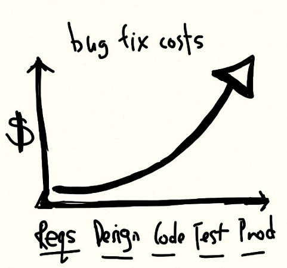

Software Testing
Available on: http://pokoli.github.io/software-testing
Who am I?
Sergi Almacellas Abellana
- (Python ♥) Programmer
- Open source enthusiast
- Automation Maniac
Bug Fixing Costs
TDD & BDD to the rescue!!
Test Driven Development
- Write Test Case
- Ensure Test Fails
- Implement Functionality
- Ensure Test Pass
- Refractor
- Ensure Test Pass
TDD Example
def sum(a, b):
return a + b
self.assertEqual(sum(1, 2), 3)
self.assertIsInstance(sum(1, 2), int)
self.assertNotIsInstance(sum(1.0, 2), int)
self.assertRaises(TypeError, sum('1', 2))
self.assertRaises(TypeError, sum())
But how to tests external services?
import requests
from datetime import date
url = 'http://www.ecb.europa.eu/stats/eurofxref/eurofxref-daily.xml'
class CurrencyConverter(object):
def get_ratios_xml(date):
return resquests.get(url)
def update_ratios():
self.parse_data(self.get_ratios_xml(date.today()))
def get_eur_to_usd(self, amount):
if not self.ratios:
self.update_ratios()
return self.ratios['usd'] * amount
Mockups to the rescue!!!
from mock import patch
converter = CurrencyConverter()
def get_local_ratios_xml(d):
self.assertEqual(d, date.today)
return open('local.xml').read()
with patch.object(CurrencyConverter, 'get_ratios_xml', new=get_local_ratios_xml):
self.assertEqual(converter.get_eur_to_usd(1), 1.12)
Behaviour Driven Development
- TDD Extension (same filosofy)
- Describes User Interaction
- Who
- What effect
- Which bussiness effect
BDD Example
Story: Application login In order to use the aplication As a application user I want to Enter the application Scenario 1: Login with email and password Given I have and valid email And I obtained a password with signup When I enters the email and password Then I see my homepage.Code Coverage
$ coverage report -m
Name Stmts Miss Cover Missing
-------------------------------------------------------
my_program.py 20 4 80% 33-35, 39
my_other_module.py 56 6 89% 17-23
-------------------------------------------------------
TOTAL 76 10
- Mesure which % of code is tested
- Allows to know which lines are not tested
- As HTML report if desired
Please don't go mad with 100% coverage
When to run the tests?
- Programmer always run tests?
- Sure?
- Always always always?
- I don't belive you
Continuous Integration to the rescue!!!!
Continuous Integration
- After commit hook
- Notifies author/manager when failure
- With multiple targets (e.g. Python 2 vs. Python 3)
- With multiple databases (e.g. PostgresSQL vs. MySQL)
But TDD+BDD+CI is enough?
NO!!Of course
Continous delivery to help you!
Continuous Delivery
- Once CI has passed
- To a staging server
- Normally using commit hash
- URL sent to testing team
- Cheaper with containers (Docker)
- Production when tagged
Summary: Full Process
- Write Test
- Implement Functionality
- Run Test
- Commit and push
- CI Test on all platforms
- CD upgrades staging machine
- Repeat 1. for each functionality
- Testing team says OK
- Create tag on repo
- Commit and push
- CI Test on all platforms
- CD upgrades production machine
Summary: Results

- Developers
- Quality Team
- Support Team
- Product Manager
- Users
- Managers
Summary: (Real) Results
- More Quality control
- Find problems earlier
- Prevent regressions
- Code documentation
- Faster Development
- Faster Feedback
- Reduce change fear
Bonus: Upgrade dependency libs (personal experience)
Migrations ♥ Tests
My steps to migrate to new version:
- Write tests (if none)
- Migrate tests (if required)
- Update dependencies
- Run tests
- Fix errors
- Repeat untill all green

Thank you!
The presentation code is avaiable on